Microcontrollers
Links
- List of Microcontrollers: https://en.wikipedia.org/wiki/List_of_common_microcontrollers
GNU Linker
General
CPU Core
The CPU runs a cyclic process, normally executed in parallel through an instruction pipeline.
Instruction cycle
Fetch - Decode - Execute.
- Fetch :: Get the next instruction from memory (pointed to by the Program Counter) and load it into the Instruction Register (IR). After fetching the next instruction, the PC points to the next instruction.
- Decode :: The value in the IR (the instruction to be executed) is decoded. The decoder gives finds the address of the corresponding microprogram, how many operands are needed and where to find them.
- Execute :: Execute the microprogram.
Control Unit
Controls the sequence of the instruction processing. The Decoder interprets the current instruction.
Handles POR, Interrupts, Errors, all sorts of signals.
Generates all necessary signals (controlling internal and external components) needed for the execution of the current instruction.
The main registers are :
- Control Register
- Program Counter (Instruction Pointer)
- Stack Register
Address Unit
Calculates the address of instructions and operands in the memory.
Execution Unit
Executes arithmetic and logical operations.
Registers
- Program Counter (Instruction Pointer) Points to the next instruction to be executed.
- Instruction Register Contains the machine code of the current instruction to be executed.
- Control Register Control execution of instructions: e.g. Interrupt Enable, User Mode.
- Status Register Information about the result of ALU operations.
- General Purpose Register
Microcode
For every machine code instruction (Assembler level code) there is a microprogram stored the control memory.
Clock Generation
In the simplest case a Schmitt-Trigger with an RC-circuit). Normally an external crystal is used to stabilize the clock. To generate higher frequencies PLLs are used to multiply the crystal frequency.
Memory
There might be CPU internal memory (at least RAM) and external memory.
- RAM
- Flash
- SPI, QSPI, Hyper
- EEPROM
- SDCARD
- DMA
It's important to know from which memory you can execute code.
- Execute in place (XIP)
- Execute programs directly from long term memory (e.g. NOR-flash) without loading it to RAM before (code shadowing).
Flash Memory
A flash write can only switch a bit from 1 to 0. Flash erase sets all bits to 1. This is why an erase is always needed before a write operation can be performed.
Pins
Most pins can perform different functions. You can see the different possible
functions in the Pin Description table or in the Pin Diagram of the User Manual, e.g.
P0[0]/RD1/TXD3/SDA1.
P0[0]- General purpose digital I/ORD1- CAN1 receiver input ITXD3- Transmitter output for UART3 OSDA1- I2C data I/O
Somehow the desired function has to be selected e.g. via a pin select register (PINSEL).
- PINSEL Set pins in a Port to specific function
Internal Bus Systems
System Bus: Address-, Data- and Control-Bus.
There is always a Data Bus (8-bit, 32-bit, 64-bit) for exchanging data between different parts of the system.
Interrupts
When do interrupts occur?
interrupt sources, hardware and software interrupts
There are physical interrupt lines (hardware interrupts) that can trigger an interrupt, either which a change of signal edge or level. Interrupt input lines can be enabled/disabled in the Interrupt Mask Register.
Software interrupts, exceptions,
interrupts triggered by interrupt flag interrupts triggered as long as the interrupt condition is present
What happens when an interrupt is triggered?
When an interrupt occurs an interrupt service routine is executed. The corresponding code can be found at the interrupt vector, i.e. the address of the IRS. Every interrupt source has it's own interrupt vector. An example is the reset vector which points to the first instruction that is executed after a reset.
The interrupt vectors, i.e. the addresses of the IRS's are read from a table (Interrupt Vector Table IVT) normally located in RAM (can also be hardwired).
A currently executing interrupt routine can be interrupted by another interrupt with higher priority, so interrupts can be nested.
External Interrupts GPIO pin interrupts: rising, falling edge
Interrupt Priority
Normally 0 has the highest priority (Cortex-M).
Timers
- Gerneral Purpose Timers time or count events polling or interrupt
- Watchdog Timer Resets the chip if not periodically reloaded after the specified time \(t_w\), i.e. in every loop or block of code that accedes \(t_w\) you have to feed the watchdog.
Boot
- XIP
- Execute In Place: Execute a program directly from external storage rather than copying the code to the RAM first.
Manual
Important information found in the User Manual:
- Pins and their functions
- Digital Pins
- Analog Pins
- Memory
- Clocking clock dividers
- Interfaces (USB, CAN, SPI, I2C)
- Timers
- Interrupts
Debugging
JTAGs Debug Access allows for viewing and modifying registers, memory, system state etc. You can also set breakpoints and do variable inspection.
Using JTAG Pins:
- TCK (Test Clock)
- TMS (Test Mode Select)
- TDO (Test Data Out)
- TRST (Test Reset)
The Build Process
ARM Cortex M Architecture
General
- RISC
- 3 address code:
ADD r0, r1, r2 ;r0: r1 + r2
Register:
- 13 Universal Registers: r0…r12
LR: Save return address when calling a subroutine.XPSR: Status Register (Flags: Overflow, Zero, etc.)
CPU execution modes:
- User Mode
- IRQ Mode: entered when external Interrupt occurs
- FRQ Mode: fast interrupt requests
- Supervisor Mode (SVC): Reset, Software Interrupt
- Hypervisor Mode (HYP)
- Undefined Instruction Exception (UND): unknown instruction
- Abort Mode
Thumb Instruction Set:
- improve code density using 16 bit commands
Memory System
Out of order execution
Memory barriers 1
Memory access transfers might have a different order than in the program code.
3 instructions:
__DMB(): Data Memory Barrier - Force all memory accesses to complete before new memory access.__DSB(): Data Synchronization Barrier - Force all memory accesses to complete before new instruction.__ISB(): Instruction Synchronization Barrier - Flush pipeline and force all previous instructions to complete before new instruction.
SysTick Timer
24 bit down counter (Hardware) counting down from an init value with the system clock.
CMSIS (Cortex μC Software Interface Standard)
Goal: Hardware Abstraction and Portability
ATmega32
- 8 bit Harvard architecture
- 32KB Flash, 1KB EEPROM, 2KB RAM
Interrupts
The IVT is located at the beginning of the flash memory. For an ISR to be called those conditions must hold
- Global Interrupt Enable Bit must be set in the control register
SREG. - Individual Interrupt Source Enabled Bit must be set.
- Interrupt source condition must be met.
ISR(INT0_vect) { //do something }
interrupt.h
cli()clear global interrupt (clear global interrupt flag in SREG)sei()set Global Interrupt Enable
Atmel Studio
Hardware
- ATMega32
- Programmer AVRISP mkII
Connection
How to set up the connection: https://www.youtube.com/watch?v=iTTZUpzAjKc
Bibliography
bibliography:Bibliography.bib
Displays
- Smooth sequences require at least 24 frames/second.
Graphic Memory and Buffers
- Framebuffer : stores all pixel data (e.g. 16 bits / pixel)
- Soucre : feeds pixel data (camera)
- Sink : grabs pixel data (display)
Technologies
CRT (Cathode-Ray tubes)
- Electron beam hits a phosphorescent screen.
- High energy consumption.
Plasma panels
- Gas cell in plasma state.
- Medium energy consumption.
LCD (Liquid crystal displays) panels
- Use thin film transistors (TFT) to block light.
- Liquid crystals are arranged due to an electic field.
- Do not emit light, so they depend on backlight.
- 3 color cells (RGB) constitute a pixel.
- Low energy consumption.
- TN (Twisted nematic)
- IPS (In-plane switching): better viewing angle and color.
The display is renewed line by line with about 60Hz.
OLED (Organic light emitting diodes) technology
- Use carbon based organic compounds to emit light.
- Flexible surfaces possible.
- Large viewing angle.
- Very high contrast.
- Low energy consumption.
EPD (Electrophoretic Displays) - E-Ink
- Black & white charged particles (e.g. positive for black, negative for white) attracted by electric field.
- Particles stay in place when the electric field is removed.
- slow
- Very low power consumption (only changes).
Touch Screens
Glass: potassium nitrate
Capacitive Touch (PCAP - Projected Capacitive Touch)
- 2 isolated layers top columns & bottom rows (Driver & Receiver Electrodes).
- The voltage of each column is measured.
- When a finger touches the screen the capacitance between the two layers is changed.
Resistive Touch
- Already invented in the 70s.
- 1 resistive & 1 conductive layer separated by spacers dots. When touched we get a voltage divider.
ESP32
Features
- Dual core
Block Diagram

ESP-IDF FreeRTOS
(modified vanilla FreeRTOS)
Arduino IDE Board Package
FreeRTOSConfig.hcontains definitions for FreeRTOS.
GNU Arm Embedded Toolchain
- gcc
- binutils:
ld(GNU linker),as(GNU assembler),objdump, etc. - gdb
GNU Linker (ld)
The linker combines multiple object files into one output binary file. Each object file has a
- list of input sections
- symbol table
Each section has a name and a size. Sections can be
- loadable
- allocatable
Example: Definition of sections
SECTIONS
{
. = 0x10000; /* '.' location counter, starting with 0 */
.text : { *(.text) } /* output section '.text' code should be loaded at 0x10000 */
. = 0x8000000;
.data : { *(.data) } /* data should start at 0x8000000 */
.bss : { *(.bss) }
}
Comments:
{ *(.text) }lists the names of the input sections placed into the output section (.text)
Types of output sections:
.text: code.rodata: read-only data.data: read-write initialized data.bss: read-write zero initialized data
List of Commands:
- MEMORY : Define memory regions
- INCLUDE "file.ld"
- SECTIONS{}
- ENTRY(symbol)
- FILL(b)
- KEEP()
Example: Memory regions
MEMORY
{
/* Define each memory region */
MEMORY_REGION_BL (rx) : ORIGIN = _BL_START_ADDRESS, LENGTH = _BL_LENGTH
MEMORY_REGION (rx) : ORIGIN = _FW_START_ADDRESS, LENGTH = _FW_LENGTH
SRAM_DTC (rwx) : ORIGIN = 0x20000000, LENGTH = 0x20000
SRAM_ITC (rwx) : ORIGIN = 0x0, LENGTH = 0x50000
SRAM_OC (rwx) : ORIGIN = 0x20200000, LENGTH = 0x10000 /* min. necessary for ROM Code*/
BOARD_SDRAM (rwx) : ORIGIN = 0x80000000, LENGTH = 0x2000000 /* 32M bytes (alias RAM4) */
}
Include files into a section
*(.text*) *(.rodata*) *system_MIMXRT1052.o /* Use '*' in front for the path */
Exclude files from a section
*(EXCLUDE_FILE( *.file1.o *.file2.o ) .text* .rdata*)
Keil
Scatter Files
- http://infocenter.arm.com/help/index.jsp?topic=/com.arm.doc.kui0101a/armlink_babddhbf.htm
- http://www.keil.com/support/man/docs/armlink/armlink_pge1362065968963.htm
A scatter file (memory regions are scattered in memory) defines (at least partly) the memory layout of the controller. This information is used by the linker to put together an image. So you can define memory regions and tell the linker to allocate objects in those regions. It also creates region related symbols when used in the source code.
Example:
Defines a RAM region starting at address 0x10000000 with size 0x4000.
Note that the loading of the code from the non volatile memory (e.g. Flash)
will be done automatically. Compiler and Linker will add code to do that on
startup. In the map file you'll see corresponding .text sections of type
CODE.
Map File Entry:
Base Addr Size Type Attr Idx E Section Name Object
0x10000000 0x00000520 Code RO 164 .text bl_dispatch.o
Scatter File Entry:
RW_IRAM2 0x10000000 0x00004000 { ; RW data
main.o (+RO)
timer.o (+RO)
mycode.o (+RO)
memory.o (*)
}
Load region (LR) Execution region (ER)
Memory Map Files
The linker creates an image
- Symbol Table (functions, globals)
Symbol Name Value Ov Type Size Object(Section) main_loop 0x10000521 Thumb Code 26 bl_main_loop.o(.text) global_mem_pntr 0x2007c300 Data 4 memory.o(.data)
- Section Cross References
bl_main.o(.text) refers to bl_main_loop.o(.text) for main_loop
LCD
LPC176x (Cortex-M3)
Pins
PINSEL register
I2C
There are 26 Bus states defined.The controller always starts clock stretching after a state change, so you have to stop clock stretching (set SI=0) actively either in the interrupt handler or periodically via polling.
Timers
- 4 32-bit general purpose timers
- watchdog timer
- repetitive interrupt timer
- system tick timer
LPC178x (Cortex-M3)
Features:
- LCD controller 24 data lines, pixel coded data, dedicated DMA controller
USB
Keil files:
- usbhw.c
- usbuser.c
Endpoint event callbacks
Example:
/* USB Endpoint Events Callback Pointers */ void (*_CONST USB_P_EP[16]) (dword event) = { USB_EndPoint0, USB_EndPoint1, USB_EndPoint2, NULL, #if HAS_JAVA USB_EndPoint4, #else NULL, #endif NULL, NULL, #if HAS_JAVA USB_EndPoint7, #else NULL, #endif NULL, NULL, NULL, NULL, NULL, NULL, NULL, NULL };
- usbcore.c
- usbdesc.c
USB descriptors
- HID class
- interfaces
- USB_ConfigDescriptor
UART
Interrups
- read UnIIR register, otherwise interrupt will be repeated
Interrupts
; Vector Table Mapped to Address 0 at Reset AREA RESET, DATA, READONLY EXPORT __Vectors __Vectors DCD __initial_sp ; Top of Stack DCD Reset_Handler ; Reset Handler DCD NMI_Handler ; NMI Handler DCD HardFault_Handler ; Hard Fault Handler DCD MemManage_Handler ; MPU Fault Handler DCD BusFault_Handler ; Bus Fault Handler DCD UsageFault_Handler ; Usage Fault Handler DCD 0 ; Reserved DCD 0 ; Reserved DCD 0 ; Reserved DCD 0 ; Reserved DCD SVC_Handler ; SVCall Handler DCD DebugMon_Handler ; Debug Monitor Handler DCD 0 ; Reserved DCD PendSV_Handler ; PendSV Handler DCD SysTick_Handler ; SysTick Handler ; External Interrupts DCD WDT_IRQHandler ; 16: Watchdog Timer DCD TIMER0_IRQHandler ; 17: Timer0 DCD TIMER1_IRQHandler ; 18: Timer1 DCD TIMER2_IRQHandler ; 19: Timer2 DCD TIMER3_IRQHandler ; 20: Timer3 DCD UART0_IRQHandler ; 21: UART0 DCD UART1_IRQHandler ; 22: UART1 DCD UART2_IRQHandler ; 23: UART2 DCD UART3_IRQHandler ; 24: UART3 DCD PWM1_IRQHandler ; 25: PWM1 DCD I2C0_IRQHandler ; 26: I2C0 DCD I2C1_IRQHandler ; 27: I2C1 DCD I2C2_IRQHandler ; 28: I2C2 DCD SPIFI_IRQHandler ; 29: SPIFI DCD SSP0_IRQHandler ; 30: SSP0 DCD SSP1_IRQHandler ; 31: SSP1 DCD PLL0_IRQHandler ; 32: PLL0 Lock (Main PLL) DCD RTC_IRQHandler ; 33: Real Time Clock DCD EINT0_IRQHandler ; 34: External Interrupt 0 DCD EINT1_IRQHandler ; 35: External Interrupt 1 DCD EINT2_IRQHandler ; 36: External Interrupt 2 DCD EINT3_IRQHandler ; 37: External Interrupt 3 DCD ADC_IRQHandler ; 38: A/D Converter DCD BOD_IRQHandler ; 39: Brown-Out Detect DCD USB_IRQHandler ; 40: USB DCD CAN_IRQHandler ; 41: CAN DCD DMA_IRQHandler ; 42: General Purpose DMA DCD I2S_IRQHandler ; 43: I2S DCD ENET_IRQHandler ; 44: Ethernet DCD MCI_IRQHandler ; 45: SD/MMC card I/F DCD MCPWM_IRQHandler ; 46: Motor Control PWM DCD QEI_IRQHandler ; 47: Quadrature Encoder Interface DCD PLL1_IRQHandler ; 48: PLL1 Lock (USB PLL) DCD USBActivity_IRQHandler ; 49: USB Activity interrupt to wakeup DCD CANActivity_IRQHandler ; 50: CAN Activity interrupt to wakeup DCD UART4_IRQHandler ; 51: UART4 DCD SSP2_IRQHandler ; 52: SSP2 DCD LCD_IRQHandler ; 53: LCD DCD GPIO_IRQHandler ; 54: GPIO DCD PWM0_IRQHandler ; 55: PWM0 DCD EEPROM_IRQHandler ; 56: EEPROM
LPC2148 (ARM 7)
Memory
GPIO Pins
- 2 32-bit GPIO ports
Interrupts
Analog Pins
ADC
Measure voltage
DAC
PWM
Generate Signals
with certain timing, e.g. serial, I2C
Communication
UART0, UART1
USB
I2C
SPI
Timer
RTC
How to deploy the hex file?
Measurement
Intronix-LogicPort
- http://www.pctestinstruments.com/index.htm
- Intronix Model LA1034 LogicPort Logic Analyzer
Saleae Logic
- https://www.saleae.com/
- Can be uses with
PulseViewprogram.
Digilent
Digilent Analog Discovery 2
PulseView Program
Inno-Maker LA2016
- 200MHz, 16 channels
NXP - iMXRT (Cortex-M7)
Features
- 528 / 600 MHz (Industrial / Consumer Application)
- Tightly coupled memory (Data & Instructions)
(32KB L1 - I-cache & D-cache) - 512 KB RAM: shared between OCRAM + DTCRAM + ITCRAM
- 32 MB external Memory Controller (SEMC - e.g. SDRAM)
- Quad SPI Controller (FlexSPI - e.g. NOR Flash)
- Timers & PWM
- 2 General Programmable Timers (GPT)
- 4 Periodical Interrupt Timers (PIT)
- 4 Quad Timers (QTimer)
- 4 Flex PWMs
- 4 Quadrature Encoder/Decoders
- Display Interface
- Audio
- Generic 2D Graphics Engine (Pixel Pipeline PXP)
- Scaling
- Color Space Conversion (CSC)
- Rotation/Flip (90°, 180°, 270°)
- Camera sensors
- On the fly QSPI-Flash decryption
- 1.5 K eFuse OTP
1020/1050 Evaluation Board
1020:

1050:

Boot Mode Select Switch (SW7)
| SW7-1 | SW7-2 | SW7-3 | SW7-4 | Boot Device |
|---|---|---|---|---|
| down | down | down | down | Internal Boot |
| down | up | up | down | Hyper Flash |
| down | down | up | down | QSPI Flash |
| up | down | up | down | SD Card |
Power Supply Settings (J1)
| J1 | Power Supply |
|---|---|
| 1-2 | DC IN: 5V |
| 3-4 | USB OTG (J9) |
| 5-6 | Debug USB (J28) |
Using QSPI NOR-Flash instead of Hyperflash
Per default a Hyperflash is used. Some resistors have to be removed
in order to use the QSPI NOR-Flash (see MIMXRT1050 EVK Board Hardware User’s Guide).
When using the QSPI NOR-Flash the sample projects have to be modified:
- select a different driver (
MIMXRT1050-EVK_IS25WP064A.cfx) - change
boot_hdrinevkbimxrt1050_flexspi_nor_config.c
evkbimxrt1050_flexspi_nor_config.c
/* * Copyright 2017 NXP * All rights reserved. * * SPDX-License-Identifier: BSD-3-Clause */ #include "evkbimxrt1050_flexspi_nor_config.h" /* Component ID definition, used by tools. */ #ifndef FSL_COMPONENT_ID #define FSL_COMPONENT_ID "platform.drivers.xip_board" #endif /******************************************************************************* * Code ******************************************************************************/ #if defined(XIP_BOOT_HEADER_ENABLE) && (XIP_BOOT_HEADER_ENABLE == 1) #if defined(__CC_ARM) || defined(__ARMCC_VERSION) || defined(__GNUC__) __attribute__((section(".boot_hdr.conf"))) #elif defined(__ICCARM__) #pragma location = ".boot_hdr.conf" #endif //const flexspi_nor_config_t hyperflash_config = { // .memConfig = // { // .tag = FLEXSPI_CFG_BLK_TAG, // .version = FLEXSPI_CFG_BLK_VERSION, // .readSampleClkSrc = kFlexSPIReadSampleClk_ExternalInputFromDqsPad, // .csHoldTime = 3u, // .csSetupTime = 3u, // .columnAddressWidth = 3u, // // Enable DDR mode, Wordaddassable, Safe configuration, Differential clock // .controllerMiscOption = // (1u << kFlexSpiMiscOffset_DdrModeEnable) | (1u << kFlexSpiMiscOffset_WordAddressableEnable) | // (1u << kFlexSpiMiscOffset_SafeConfigFreqEnable) | (1u << kFlexSpiMiscOffset_DiffClkEnable), // .sflashPadType = kSerialFlash_8Pads, // .serialClkFreq = kFlexSpiSerialClk_133MHz, // .sflashA1Size = 64u * 1024u * 1024u, // .dataValidTime = {16u, 16u}, // .lookupTable = // { // // Read LUTs // FLEXSPI_LUT_SEQ(CMD_DDR, FLEXSPI_8PAD, 0xA0, RADDR_DDR, FLEXSPI_8PAD, 0x18), // FLEXSPI_LUT_SEQ(CADDR_DDR, FLEXSPI_8PAD, 0x10, DUMMY_DDR, FLEXSPI_8PAD, 0x06), // FLEXSPI_LUT_SEQ(READ_DDR, FLEXSPI_8PAD, 0x04, STOP, FLEXSPI_1PAD, 0x0), // }, // }, // .pageSize = 512u, // .sectorSize = 256u * 1024u, // .blockSize = 256u * 1024u, // .isUniformBlockSize = true, //}; // this code is placed by the linker at the beginning of the external flash (e.g. 0x60000000) const flexspi_nor_config_t qspiflash_config = { .memConfig = { .tag = FLEXSPI_CFG_BLK_TAG, .version = FLEXSPI_CFG_BLK_VERSION, // .readSampleClkSrc = kFlexSPIReadSampleClk_LoopbackFromDqsPad, .readSampleClkSrc = kFlexSPIReadSampleClk_LoopbackInternally, .csHoldTime = 3u, .csSetupTime = 3u, .sflashPadType = kSerialFlash_4Pads, // .serialClkFreq = kFlexSpiSerialClk_100MHz, .serialClkFreq = kFlexSpiSerialClk_133MHz, .sflashA1Size = 8u * 1024u * 1024u, .lookupTable = { // Read LUTs FLEXSPI_LUT_SEQ(CMD_SDR, FLEXSPI_1PAD, 0xEB, RADDR_SDR, FLEXSPI_4PAD, 0x18), FLEXSPI_LUT_SEQ(DUMMY_SDR, FLEXSPI_4PAD, 0x06, READ_SDR, FLEXSPI_4PAD, 0x04), }, }, .pageSize = 256u, .sectorSize = 4u * 1024u, .blockSize = 256u * 1024u, .isUniformBlockSize = false, }; #endif /* XIP_BOOT_HEADER_ENABLE */
Arduino Interface
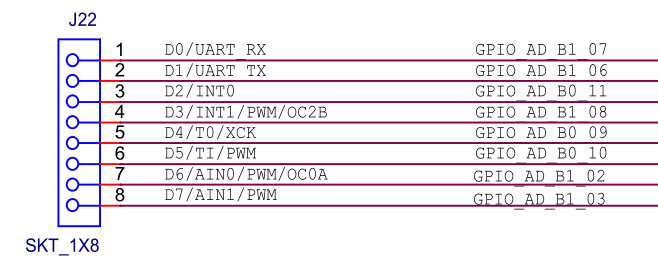 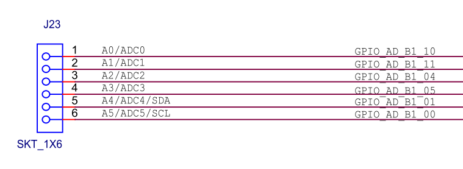 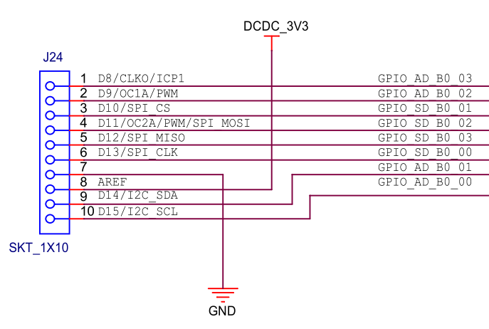 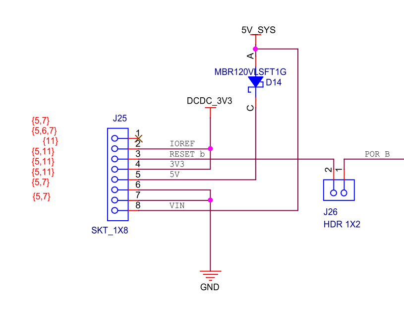
Boot Options
1050:
- SW7-3 ON : Boot with Serial Downloader (Sometimes necessary for erasing Flash)
- SW3, SW4 : Reset Buttons
- SW8 : For development (GPIO5-00)
Boot
BT_FUSE_SEL
- 1: Boot options are controlled by the eFUSEs.
- 0: Boot options may be overwritten using GPIO pins.
eFUSE Configuration
Many configurations can be controlled with OTP Fuse bits.
- Behavior of the Boot ROM.
- Boot device selection.
OTP Memory The OTP memory is structured in Banks and Words. The addresses in the Fuses refer to the offsets of the Bank/Word registers to be found in the memory map of the OCOTP. Example:
0x460[7:0], bit 4 is BT_FUSE_SEL
0x460 is the offset of the register HW_OCOTP_CFG5 which has Address 0x06.
This address has to be put into register HW_OCOTP_CTRL (OCOTP->CTRL).
Write Fuses
Chapter 23(RM): On-Chip OTP Controller (OCOTP->CTRL)
System Boot
After reset the ARM core starts executing from the boot ROM. The boot process is configured with:
- BOOT_MODE[1:0] register
- eFUSEs and/or GPIO settings
The boot ROM code can also handle downloads of programs via USB or LPUART1 (Serial Downloader).
| BOOT_MODE[1:0] | Boot from | Description |
|---|---|---|
| 00 | Fuses | same as Internal but GPIO Override is ignored |
| 01 | Serial Downloader | download image from PC |
| 10 | Internal | boot image from boot device, configured with Fuses and GPIO |
| 11 | Reserved |
Internal Boot
BOOT_CFG1[7:4] eFUSEs control the selection of the external boot device.
| BOOT_CFG1[7:4] | Boot device |
|---|---|
| 0000 | serial NOR flash via FlexSPI |
| 01xx | SD BOOT via uSDHC |
| 10xx | eMMC/MMC boot via uSDHC |
| 0001 | parallel NOR flash via SEMC |
| 11xx | serial NAND via FlexSPI |
Boot from NOR Flash via FlexSPI
The boot ROM will boot the image at address 0x60000000.
The very first thing is the boot header configuring the NOR Flash (.boot_hdr.conf).
Generating a bootable image
https://community.nxp.com/docs/DOC-341317
Bootable image:
- FlexSPI Configuration Block
- Image Vector Table
- Boot Data
- Device Configuration Data
- Program Image
Image Vector Table
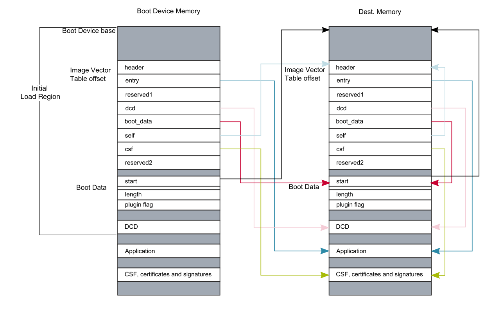
See
- fsl_flexspi_nor_boot.c
- section .boot_hdr.conf
- evkbimxrt1050_flexspi_nor_config.c
Debugging Issues
- Debugger fucks up
- Download not possible (in this case a reboot with ROM-mode helps).
- Cannot Step into a function (but Breakpoint works)
Possible causes for problems:
- chip boots in ROM mode (e.g. short between GPIO_AD_B0_04 and GPIO_AD_B0_05)
- chip resets due to sensitivity on SWD pins (TMS, TCK) - or something else
- same thing happens with a simple blinky program
- jtag not correctly connected (e.g. por - gnd)
- Supply only via USB, Problem when BL is turned on - seems better with Adapter
- POR only doesn't always solve a boot problem, you have to power cycle the device
- FW hangs in an IRQ Handler (repeatedly triggered, e.g. by an error flag)
Screenshots see here: iMXRT1050 Debugging Problems
Observations:
- The debug problems are caused by a chip reset (can be seen on the Osci).
- Same happens with a simple blinky sample.
- The program runs stable without debugger.
- EVKB-Board works stable with 20pin connector.
- EVKB-Board is also instable when only TMS and TCK are connected.
Conclusion:
- The debug signals (TMS and/or TCK) somehow cause the chip to reset.
LPC-LINK2 - CMSIS-DAP connected to SWD: TMS- and TCK-pins. very sensitive
Internal bus systems
- APB (Advanced Peripheral Bus)
- AHB (Advanced High-performance Bus)
- IP Bus (AIPS, ARM IP Bus)
- AXI (Advanced eXtensible Interface)
- AMBA (Advanced Microcontroller Bus Architecture)
IO
The IOMUX Controller enables the IC to share one pad to several functional blocks.
- Up to 8 muxing options (
ALT modes)
Driver: fsl_iomuxc.c
IOMUXC_SetPinMux()IOMUXC_SetPinConfig()
GPIO pins
Driver: fsl_gpio.c
GPIO_PinInit()GPIO_PinWrite()
MCUXpressoIDE
- Download
SDK_2.5.1_EVKB-IMXRT1050and drag it to MXUXpresso - CMSIS-DAP (Cortex Microcontroller Software Interface Standard - Debug Access Port)
Pragmas etc
__STATIC_INLINE__attribute__ ((used, section(".isr_vector")))
Move Functions to RAM
#include <cr_section_macros.h> __RAMFUNC(SRAM_ITC) void myfun_in_ram() {}
In MCUXpresso you can also use linkscripts to put complete modules into ram:
<#if memory.name=="SRAM_ITC"> *flexspi_hyper_flash_ops.o(.text*) *flexspi_nor_flash_ops.o(.text*) *fsl_flexspi.o(.text*) </#if>
Note that they have to be in a folder linkerscripts directly in the project
folder.
C Libraries used
Newlib: GNU C/C++ LibraryNewlibNanoRedlib: very small (not GNU C library)
How to change the library?
- with "Managed Linker Scripts" : Quickstart Panel -> Quick Settings -> Set library/header type
when using custom Linker Scripts:
- MCU C Compiler -> Miscellaneous -> Library headers
- MCU Assembler -> Architecture & Headers
Memory
How to organize memory?
- Place Critical code (ISRs) in ITCM.
- LCD buffer to OCRAM.
Internal RAM
- FlexRAM: Configurable RAM array 2.
- Size: 512KB
- can act as: DTC-RAM, ITC-RAM and OC-RAM (On Chip RAM), sharable
- 3 power domains can be assigned
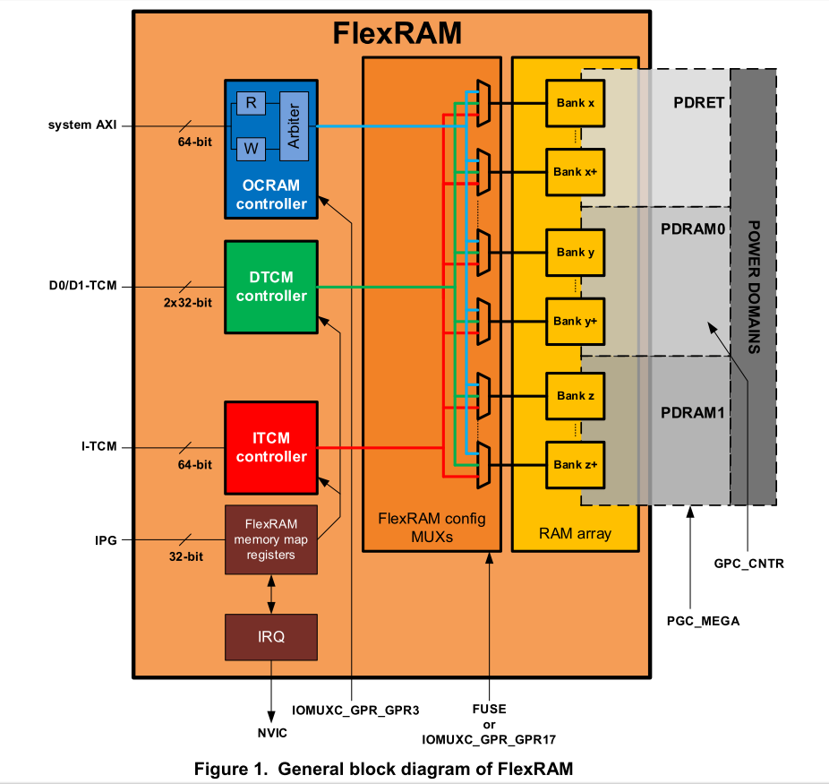
The config MUX can be configured via FUSE (chapter 21, Fusemap, UM) or IOMUXC_PGR_GPR17 (10.4.18, UM). Default config is FUSE 0b0000:
- OCRAM : 256 kB
- DTCM : 128 kB
- ITCM : 128 kB
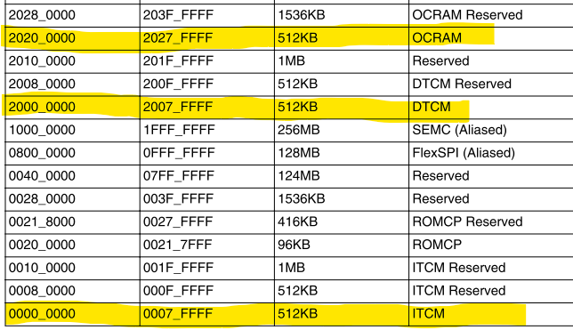
Registers:
_PGR_GPR17: Configure memory distribution between DTC- ITC- and OC-RAMIOMUXC_PGR_GPR16: Enable/Disable DTCM and ITCM, Use Fuse or FLEXRAM_BANK_CFGIOMUXC_PGR_GPR14: Total Size Configuration
Notes:
- Total Size Configuration
IOMUXC_PGR_GPR14(less possibilities) might conflict with the settings inIOMUXC_PGR_GPR17.
Interrupts:
FLEXRAM_IRQn
L1 Cache
See: Application Note 3
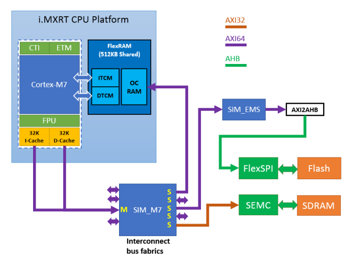
External Flash
start Address: 0x6000 0000
FlexSPI Controller
Connect serial NOR-, NAND-Flash modules, HyperFlash, HyperRAM and FPGA devices.
- 2 SPI channels, max. 4 devices
- single, dual, quad, octal mode data transfer
- Sequence Engine (LUT table)
- Controlled via either AHB Bus (64bit) or IPS Bus (32bit)
Programmable Sequence Engine
The LUT contains n sequences consisting of up to 8 instructions sequentially executed. The FlexSPI controller will fetch a sequence from the LUT memory by index and generate a flash transaction on the SPI interface.
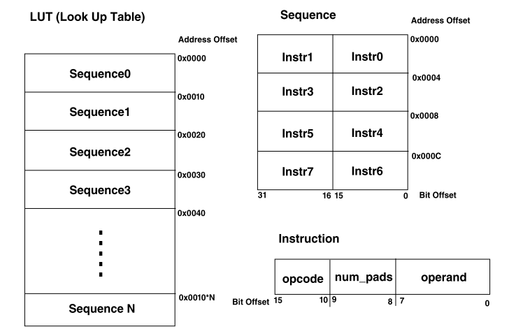
FlexSPI instruction in the LUT:
FLEXSPI_LUT_SEQ(cmd0, pad0, op0, cmd1, pad1, op1)
We have twice: commands, pads and operands. This is e.g. the row Instr1 | Instr0 in the above picture.
Typical entry in the LUT-Table in C-code:
// 4 entries can be written per Sequence: 4 * idx + 0,1,2,3 [4 * SEQ_IDX_READ_NORMAL] = FLEXSPI_LUT_SEQ(kFLEXSPI_Command_SDR, kFLEXSPI_1PAD, 0x03, // cmd0,pad0,op0 kFLEXSPI_Command_RADDR_SDR, kFLEXSPI_1PAD, 0x18), // cmd1 [4 * SEQ_IDX_READ_NORMAL + 1] = FLEXSPI_LUT_SEQ(kFLEXSPI_Command_READ_SDR, kFLEXSPI_1PAD, 0x04, // cmd2 kFLEXSPI_Command_STOP, kFLEXSPI_1PAD, 0), // cmd3
NAND-flash instruction Example:
- SDR-Mode
- Data transfer via DI- and DO-pins (
kFLEXSPI_1PAD).

The corresponding LUT-Table entry should look like this:
// 4 entries can be written per Sequence: 4 * idx + 0,1,2,3 // flash command: 0x13 (Page Data Read) [4 * SEQ_IDX_READ_NORMAL] = FLEXSPI_LUT_SEQ(kFLEXSPI_Command_SDR, kFLEXSPI_1PAD, 0x03, // cmd0 // 8 Dummy Clocks kFLEXSPI_Command_RADDR_SDR, kFLEXSPI_1PAD, 0x18), // cmd1 // Page Address [15:0] [4 * SEQ_IDX_READ_NORMAL + 1] = FLEXSPI_LUT_SEQ(kFLEXSPI_Command_READ_SDR, kFLEXSPI_1PAD, 0x04, // cmd2 kFLEXSPI_Command_STOP, kFLEXSPI_1PAD, 0), // cmd3
CMD definition of FLEXSPI, use to form LUT instruction:
/*! @brief CMD definition of FLEXSPI, use to form LUT instruction. */ enum _flexspi_command { kFLEXSPI_Command_STOP = 0x00U, /*!< Stop execution, deassert CS. */ kFLEXSPI_Command_SDR = 0x01U, /*!< Transmit Command code to Flash, using SDR mode. */ kFLEXSPI_Command_RADDR_SDR = 0x02U, /*!< Transmit Row Address to Flash, using SDR mode. */ kFLEXSPI_Command_CADDR_SDR = 0x03U, /*!< Transmit Column Address to Flash, using SDR mode. */ kFLEXSPI_Command_MODE1_SDR = 0x04U, /*!< Transmit 1-bit Mode bits to Flash, using SDR mode. */ kFLEXSPI_Command_MODE2_SDR = 0x05U, /*!< Transmit 2-bit Mode bits to Flash, using SDR mode. */ kFLEXSPI_Command_MODE4_SDR = 0x06U, /*!< Transmit 4-bit Mode bits to Flash, using SDR mode. */ kFLEXSPI_Command_MODE8_SDR = 0x07U, /*!< Transmit 8-bit Mode bits to Flash, using SDR mode. */ kFLEXSPI_Command_WRITE_SDR = 0x08U, /*!< Transmit Programming Data to Flash, using SDR mode. */ kFLEXSPI_Command_READ_SDR = 0x09U, /*!< Receive Read Data from Flash, using SDR mode. */ kFLEXSPI_Command_LEARN_SDR = 0x0AU, /*!< Receive Read Data or Preamble bit from Flash, SDR mode. */ kFLEXSPI_Command_DATSZ_SDR = 0x0BU, /*!< Transmit Read/Program Data size (byte) to Flash, SDR mode. */ kFLEXSPI_Command_DUMMY_SDR = 0x0CU, /*!< Leave data lines undriven by FlexSPI controller.*/ kFLEXSPI_Command_DUMMY_RWDS_SDR = 0x0DU, /*!< Leave data lines undriven by FlexSPI controller, dummy cycles decided by RWDS. */ kFLEXSPI_Command_DDR = 0x21U, /*!< Transmit Command code to Flash, using DDR mode. */ kFLEXSPI_Command_RADDR_DDR = 0x22U, /*!< Transmit Row Address to Flash, using DDR mode. */ kFLEXSPI_Command_CADDR_DDR = 0x23U, /*!< Transmit Column Address to Flash, using DDR mode. */ kFLEXSPI_Command_MODE1_DDR = 0x24U, /*!< Transmit 1-bit Mode bits to Flash, using DDR mode. */ kFLEXSPI_Command_MODE2_DDR = 0x25U, /*!< Transmit 2-bit Mode bits to Flash, using DDR mode. */ kFLEXSPI_Command_MODE4_DDR = 0x26U, /*!< Transmit 4-bit Mode bits to Flash, using DDR mode. */ kFLEXSPI_Command_MODE8_DDR = 0x27U, /*!< Transmit 8-bit Mode bits to Flash, using DDR mode. */ kFLEXSPI_Command_WRITE_DDR = 0x28U, /*!< Transmit Programming Data to Flash, using DDR mode. */ kFLEXSPI_Command_READ_DDR = 0x29U, /*!< Receive Read Data from Flash, using DDR mode. */ kFLEXSPI_Command_LEARN_DDR = 0x2AU, /*!< Receive Read Data or Preamble bit from Flash, DDR mode. */ kFLEXSPI_Command_DATSZ_DDR = 0x2BU, /*!< Transmit Read/Program Data size (byte) to Flash, DDR mode. */ kFLEXSPI_Command_DUMMY_DDR = 0x2CU, /*!< Leave data lines undriven by FlexSPI controller.*/ kFLEXSPI_Command_DUMMY_RWDS_DDR = 0x2DU, /*!< Leave data lines undriven by FlexSPI controller, dummy cycles decided by RWDS. */ kFLEXSPI_Command_JUMP_ON_CS = 0x1FU, /*!< Stop execution, deassert CS and save operand[7:0] as the instruction start pointer for next sequence */ };
PAD definition:
/*! @brief pad definition of FLEXSPI, use to form LUT instruction. */ enum _flexspi_pad { kFLEXSPI_1PAD = 0x00U, /*!< Transmit command/address and transmit/receive data only through DATA0/DATA1. */ kFLEXSPI_2PAD = 0x01U, /*!< Transmit command/address and transmit/receive data only through DATA[1:0]. */ kFLEXSPI_4PAD = 0x02U, /*!< Transmit command/address and transmit/receive data only through DATA[3:0]. */ kFLEXSPI_8PAD = 0x03U, /*!< Transmit command/address and transmit/receive data only through DATA[7:0]. */ };
Debugging
Wildfire i.MX RT1052 EVK Pro Board
- FLEXSPI_SS0 : pin B51
- FLEXSPI_CLK : pin B53
- FLEXSPI_D0_A : pin B55
- FLEXSPI_D1_A : pin B57
- FLEXSPI_D2_A : pin B59
- FLEXSPI_D3_A : pin B61
MPU (Memory Protection Unit)
Divides the memory map into up to 16 memory regions.
- 16 protected regions
- overlapping, ascending region priority: (15 highest priority)
- access permissions: access permission bits, TEX, C, B, AP, XN
- memory attributes
MPU Region Attribute and Size Register (MPU_RASR)
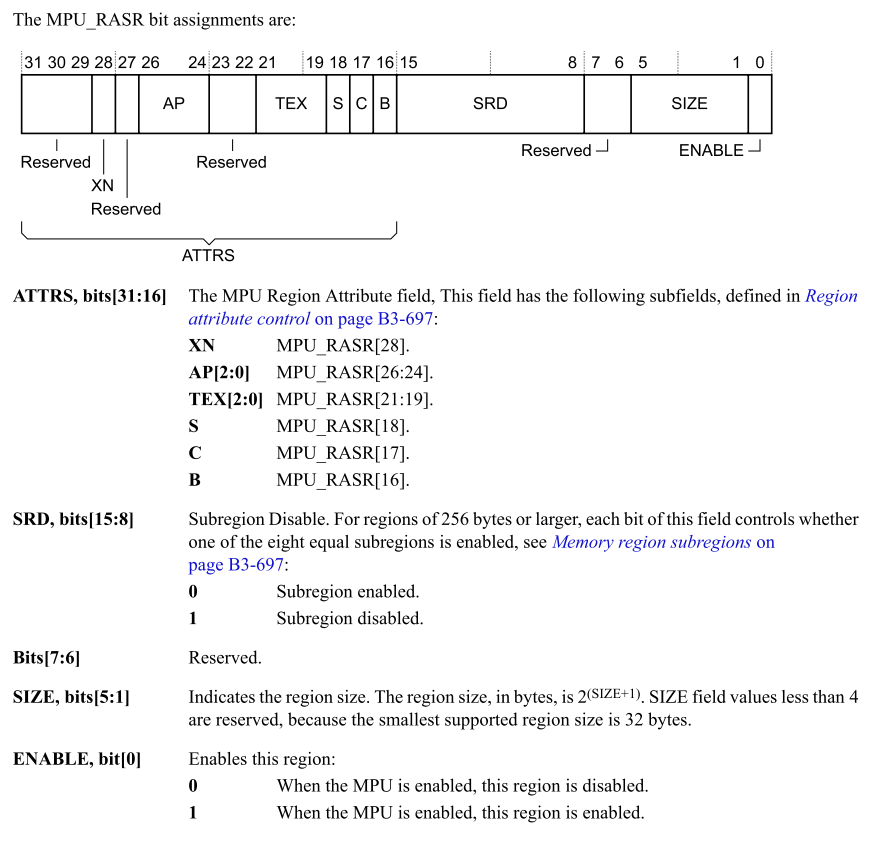
C-Code for configuring a region
MPU->RBAR = ARM_MPU_RBAR(4, 0x80000000U); // TEX, Shareable, Cachable, Bufferable MPU->RASR = ARM_MPU_RASR(0, ARM_MPU_AP_FULL, 0, 0, 0, 0, 0, ARM_MPU_REGION_SIZE_128MB);
Memory Types:
Normal: Re-order transactions for efficiency.Device and Strongly-ordered: Preserve transaction order.Sherable: Data synchronization between multiple bus masters. Strongly ordered is always shareable.Execute Never (XN): Prevents instruction accesses.
Region Attributes
- TEX[2:0], C, B together indicate the memory type
- S : shareable (ignored for strongly ordered regions)
- AP[2:0] : access privilege (No, R/W, R only)
- XN : Execute Never
TEX, C, B
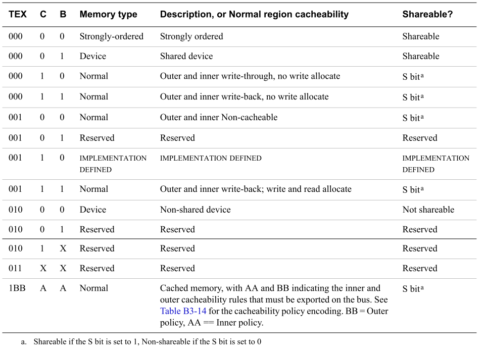
AP[2:0]
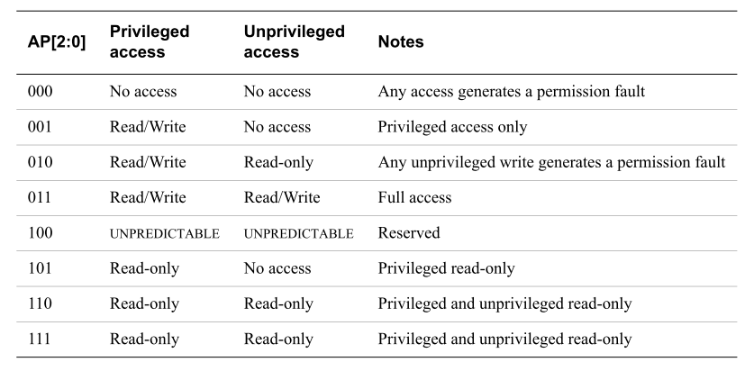
USB Stack (Freescale)
- How to create a composite device?
Should be done in the device descriptors. see:
usb_device_descriptor.cIf everything is correct, the device will be recognized by windows. - How to add a WinUSB device? Is a Bulk device, see descriptor.
- Enumeration Process
Is done via Endpoint 0 (reserved for control).
- USB_DeviceGetDescriptor()
USB_DeviceInit
USB_DeviceControlPipeInit
USB_DeviceConfigureEndpointStatus
USB_DeviceCallback
Callback function to be notified when device status has changed.
Init the endpoint with 2 datastructures:
USB_DeviceInitEndpoint(handle, &epInitStruct, &epCallback);
usb_device_endpoint_callback_struct_t epCallback;
When data is sent to the device we land in:
USB_OTG1_IRQHandler -> USB_DeviceEhciIsrFunction
USB_DeviceClockInit
USB_DeviceSetEndpointConfiguration
USB_DeviceIsrEnable
USBHS_IRQS { USB_OTG1_IRQn, USB_OTG2_IRQn }
USB_OTG1_IRQHandler
Initialization
Typically done in a function called USB_DeviceApplicationInit.
USB_DeviceClockInit()USB_DeviceInit(...,USB_DeviceCallback,...)USB_DeviceIsrEnable()USB_DeviceRun()
USB Device Callback Work Flow
USB_DeviceInit() registers a global device callback function. The following events can be processed:
kUsbDeviceEventBusResetUSB_DeviceControlPipeInit(handle)kUsbDeviceEventSetConfigurationThe host sends a set configuration request. Initialize all Endpoints.kUsbDeviceEventSetInterface
Send and receive data
You need to set up the correct endpoint callback functions.
There are certain buffers for receiving data from the host.
USB_DeviceGetClassReceiveBuffer
The function will be called (from usb_device_ch9.c) when the device receives a setup packet to
get the buffer for storing the incoming data.
USB_DeviceProcessClassRequest
Here the received data is passed in the buffer argument.
hid_user.c connects to the corresponding queues.
USB_EndPoint0 -> HID_SetReport -> commio_RxData
The endpoints are callback functions USB_EndPoint0(dword event)
/* USB Endpoint Events Callback Pointers */ void (*_CONST USB_P_EP[16]) (dword event) = { USB_EndPoint0, USB_EndPoint1, USB_EndPoint2, NULL, #if HAS_JAVA USB_EndPoint4, #else NULL, #endif NULL, NULL, #if HAS_JAVA USB_EndPoint7, #else NULL, #endif NULL, NULL, NULL, NULL, NULL, NULL, NULL, NULL };
The data is passed
SetupPacket EP0Buf
USB_DeviceTransfer -> deviceHandle->epCallback()
Timers
- 2 General Programmable Timers (GPT)
- 32-bit up counter with 12-bit pre-scaler, rising/falling edge
- 4 Periodical Interrupt Timers (PIT)
- 32 bit counter with modulus count, clock division, etc.
- 4 Quad Timers (TMR)
- 4 Flex PWMs
- control single half bridge power stage
- 4 Quadrature Encoder/Decoders
- interface for position/speed sensors
- 4 Watchdog Timers (WDOG1/WDOG2/RTWDOG/WDOG3)
Periodic Interrupt Timer (PIT)
void initJavaTimer(void) { pit_config_t pitConfig; /* Structure of initialize PIT */ PIT_GetDefaultConfig(&pitConfig); /* pitConfig.enableRunInDebug = false;*/ PIT_Init(PIT, &pitConfig); /* Init pit module */ PIT_SetTimerPeriod( PIT, kPIT_Chnl_0, MSEC_TO_COUNT(1U, CLOCK_GetFreq(kCLOCK_PerClk)) - 1); /* Set timer period for channel 0 */ PIT_EnableInterrupts(PIT, kPIT_Chnl_0, kPIT_TimerInterruptEnable); /* Enable timer interrupts for channel 0 */ //EnableIRQ(PIT_IRQ_ID); /* Enable at the NVIC */ NVIC_EnableIRQ(PIT_IRQn); NVIC_SetPriority(PIT_IRQn, SYSTEM_TICK_TIMER_PRIORITY); PIT_StartTimer(PIT, kPIT_Chnl_0); } // Interrupt Service Routine void PIT_IRQHandler(void) { /* Clear interrupt flag.*/ PIT_ClearStatusFlags(PIT, kPIT_Chnl_0, kPIT_TimerFlag); __DSB(); // update system time (in ms) systemTimeMs += (1000 / SYSTEM_TIME_TICK); //call timer callback, if registered if (pTimerCallback != NULL) (*pTimerCallback)(); }
etc
ARM IP Bus (AIPS)
Programming Microcontrollers
STM32 MP1
- Cortex A7 (Dual Core @ 800 MHz)
- Cortex M2 (209 MHz)
- 3D GPU Open GL
- Eval-Board:
STM32MP157C-DK2
Linux
- OpenSTLinux Distribution from ST (
stm32mp1-openstlinux) - Yocto Project
- STM32CubeProgrammer